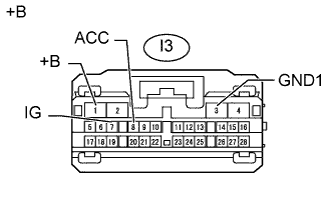

DTC B15D8 Монитор отсоединен |
| Код DTC | Условие обнаружения DTC | Неисправный участок |
| B15D8 | Выполняется любое из следующих условий:
|
|
| 1.ПРОВЕРЬТЕ НАЛИЧИЕ ДОПОЛНИТЕЛЬНЫХ УСТРОЙСТВ (ВКЛЮЧАЯ СООТВЕТСТВУЮЩУЮ ПРОВОДКУ) |
Проверьте наличие дополнительных устройств.
Убедитесь, что не установлены дополнительные устройства (включая соответствующую проводку), генерирующие радиосигналы.
| Результат | Следующий шаг |
| Дополнительные устройства (включая соответствующую проводку) установлены | А |
| Дополнительные устройства (включая соответствующую проводку) не установлены | B |
|
| ||||
| А | |
| 2.УДАЛИТЕ ДОПОЛНИТЕЛЬНЫЕ УСТРОЙСТВА |
Удалите дополнительные устройства (включая соответствующую проводку).
| ДАЛЕЕ | |
| 3.ПРОВЕРЬТЕ DTC |
Удалите коды DTC (Нажмите здесь).
Проверьте коды DTC и проверьте, возникает ли эта же неисправность снова.
|
| ||||
| OK | ||
| ||
| 4.ПРОВЕРЬТЕ ЖГУТ ПРОВОДОВ И РАЗЪЕМ (ПИТАНИЕ ЭБУ СИСТЕМЫ ПОМОЩИ ПРИ ПАРКОВКЕ) |
|  |
Отсоедините разъем I3 ЭБУ системы помощи при парковке.
Измерьте сопротивление в соответствии со значениями, приведенными в таблице ниже.
| Контакты для подключения диагностического прибора | Условие | Заданные условия |
| I3-3 (GND1) - масса | Всегда | Менее 1 Ом |
Измерьте напряжение в соответствии со значениями, приведенными в таблице.
| Контакты для подключения диагностического прибора | Положение переключателя | Заданные условия |
| I3-1 (+B) - I3-3 (GND1) | Всегда | 11 - 14 В |
| I3-8 (ACC) - I3-3 (GND1) | Замок зажигания в положении ACC | 11 - 14 В |
| I3-7 (IG) - I3-3 (GND1) | Зажигание включено | 11 - 14 В |
| *a | Вид спереди разъема со стороны жгута проводов: (к ЭБУ системы помощи при парковке) |
|
| ||||
| OK | |
| 5.ПРОВЕРЬТЕ ЖГУТ ПРОВОДОВ И РАЗЪЕМ (ЛИНИЯ ПЕРЕДАЧИ ДАННЫХ AVC-LAN) |
Отсоедините разъем H3 дисплея модуля системы навигации и индикации.
Отсоедините разъем I3 ЭБУ системы помощи при парковке.
Измерьте сопротивление в соответствии со значениями, приведенными в таблице ниже.
| Контакты для подключения диагностического прибора | Условие | Заданные условия |
| H3-1 (TX1+) - I3-25 (TX+) | Всегда | Менее 1 Ом |
| H3-2 (TX1-) - I3-24 (TX-) | Всегда | Менее 1 Ом |
| H3-1 (TX1+) - масса | Всегда | 10 кОм или более |
| H3-2 (TX1-) - масса | Всегда | 10 кОм или более |
|
| ||||
| OK | |
| 6.ЗАМЕНИТЕ ЭБУ СИСТЕМЫ ПОМОЩИ ПРИ ПАРКОВКЕ |
Замените ЭБУ системы помощи при парковке.
Сбросьте коды DTC (Нажмите здесь).
Проверьте коды DTC и проверьте, возникает ли эта же неисправность снова.
|
| ||||
| OK | ||
| ||